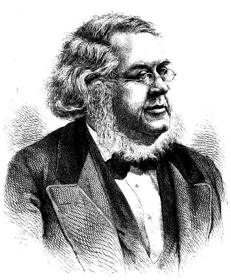
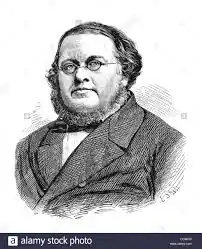

Петер Крістен Асбйорнсен (15 січня 1812 – 6 січня 1885) — норвезький письменник та науковець.
Разом з Йорґеном Му збирав норвезький фольклор. Ці два автори були настільки поєднані у своїй літературній праці, що їх збірки казок зазвичай були підписані просто "Асбйорнсен та Му".
Петер Крістен Асбйорнсен народився у сім'ї Андреаса Асбйорнсена. Його батько був скляром та спеціалістом із виготовлення інструментів, а також інспектором водогону в Христианії. Пізніше він став одним із засновників Королівського товариства "На благо Норвегії". Андреас Асбйорнсен був одним із тих приватних осіб, які пожертвували найбільшу кількість грошей на заснування університету на норвезькій землі. Петер Крістен Асбйорнсен мало цікавився шкільними предметами, тому був відрахований з навчального закладу і направлений до Нодерхова для отримання атестату зрілості. Тут він подружився із Йорґеном Му, за давнім звичаєм хлопці змішали кров і поклялися бути побратимами . Надалі ця дружба зазнала серйозних випробувань, оскільки Асбйорнсену стали близькими погляди Дарвіна, а до того ж він 40 років жив у фактичному шлюбі з Матільдою Андерссон, чого, звісно, не міг схвалювати теолог Му . Серед спільних захоплень Асбйорнсена і Му була усна народна творчість. Вони почали записувати народні легенди, казки і перекази, спочатку кожен робив це сам по собі. Перший фольклорний запис належить Асбйорнсену і датується 1833 роком. У 1837 році товариші розробили план створення першої збірки фольклору. Поштовхом до цього стало, очевидно, зібрання казок братів Гримм, з яким Му познайомився у 1836 році. Асбйорнсен наполіг на тому, щоб казки були записані якомога ближче до усної народної традиції. В кінці 1841 року вийшла друком перша збірка норвезьких народних казок, зібраних Асбйорнсеном і Му. Протягом наступних трьох років з'явилися ще три випуски казок. Вони мали великий розголос. Зібрання Асбйорнсена і Му отримало як прихильні, так і критичні відгуки. Критики звертали увагу на відсутність його наукової складової. Цей недолік було виправлено у виданні 1852 року, яке було доповнене аналізом варіантів сюжетів із різних регіонів Норвегії та інших європейських країн . Зрештою саме зібрання народних казок принесло славу Асбйорнсену і Му. У 1879 році побачило світ перше ілюстроване видання норвезьких казок, зібраних фольклористами. Ілюстрації до казок в різний час створювали визначні скандинавські митці, серед яких Теодор Кіттельсен, Ханс Фредрік Гуде, Пер Крог, Ейліф Петерсен, Альф Рольфсен, Хенрік Сьоренсен, Ерік Вереншьоль та ін. У 1845 році побачив світ перший випуск "Норвезьких казок та народних легенд" (альтернативні варіанти перекладу — "Норвезькі казки про нечисту силу та народні сказання", "Норвезькі казки про хульдр та народні перекази"), опублікований Асбйорнсеном самостійно. Другий випуск вийшов у 1848 році. Інтереси Асбйорнсена не обмежувалися фольклористикою. Він був також океанологом, вивчав лісівництво в німецькому Тарандті, був одним із перших у Норвегії лісівників та фахівців із видобутку торфу. Протягом 1838 — 1849 років вчений видав шість томів "Природничої історії для юнацтва". У 1850-і рр. вчений виявив у Хардангер-фіорді невідому науці величезну морську зірку розміром 60 сантиметрів у діаметрі. З 1858 по 1876 роки Асбйорнсен був Головним лісничим Норвегії, а з 1864 року поєднував цю посаду із посадою Головного державного торф'яника. У 1864 році в Христианії вийшла книга Асбйорнсена-кулінара "Розумне куховарство". Автор випустив її під псевдонімом Clemens Bonifacius. Згодом вона була також перекладена данською та шведською мовами. Вона спричинила так звану "велику битву за кашу". Дебати стосувалися оптимального способу приготування каші. У віці 67 років Асбьорнсен подав заяву на відпустку і отримав повну пенсію при виході на пенсію. У нього був діабет і ревматизм, і літературних планів було мало. Його вшановували різними способами як вдома, так і за кордоном. Асбьорнсен доклав чимало зусиль в суспільному житті Норвегії, але в першу чергу він виступав в ролі казки і оповідача, який допоміг об'єднати норвезьку культуру і самобутність.